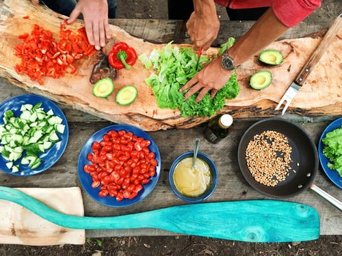

Experience Everyday
July 23, 2021 | 3 comments
Life can get complicated really quickly, but it doesn't have to be! There are many ways to simplify your life, a few of which we've explored in the past. This week we're taking a bit of a approach through, in how you can find simplicity in the life you already leaving.
CONTINUE READING
Keeping cooking simple
Food is a very important part of everyone's life. If you want to be healthy, you have to eat healthy. One of the easiest way to do that is to keep your cooking nice and simple.
CONTINUE READING

July 23, 2021 | 3 comments
Simplicity and work
Work is often a major source of stress. People get frustrated, it ruins their relationship with others and it leads to burnout. By keeping your work life as simple as possible, it will help balance everything out.
CONTINUE READING

July 19, 2021 | 3 comments
Daily News
Get all the latest news and updates here. Check all news about sports, politics, national and internations news including photos and videos
CONTINUE READING